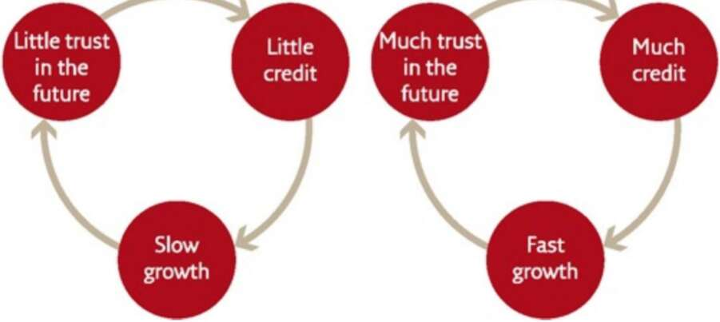

os aia Econ. ane Modern Eco, Om 4 i) Little trust Little in the credit future The Economic History of the World in a Nutshell The belief in the growing global pie eventually turned revolutionary. In 1776 the Scottish economist Adam Smith published The Wealth of Nations, probably the most important economics manifesto of all time. In the eighth chapter of its first volume, Smith made the following novel argument: when a landlord, a weaver, or a shoemaker has greater profits than he needs to maintain his own family, he uses the surplus to employ more assistants, in order to further increase his profits. The more profits he has, the more assistants he can employ. It follows that an increase in the profits of private entrepreneurs is the basis for the increase in collective wealth and prosperity. This may not strike you as very original, because we all live in a capitalist world that takes Smith’s argument for granted. We hear variations on this theme every day in the news. Yet Smith’s claim that the selfish human urge to increase private profits is the basis for collective wealth is one of the most revolutionary ideas in human history — revolutionary not just from an economic perspective, but even more so from a moral and political perspective. What Smith says is, in fact, that greed is good, and that by becoming richer I benefit everybody, not just myself. Egoism is altruism. Smith taught people to think about the economy as a ‘win-win situation’, in which my profits are also your profits. Not only can we both enjoy a bigger slice of pie at the same time, but the increase in your
